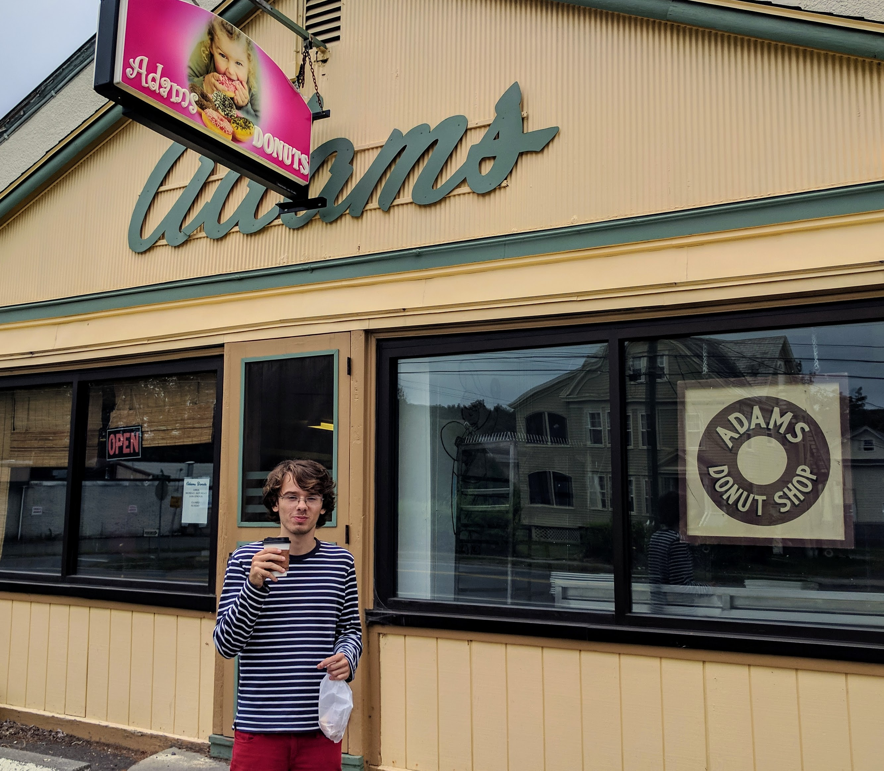

Saul Shanabrook
...is a human being. He is most often in Amherst, MA where he lives and attends school.
But not for long! Set to graduate in December, his future location is uncertain.
Online presence
You can find the digital artifacts he creates distributed accross a variety of online platforms:
-
github.com/saulshanabrook
-
A collection of half thought through ideas and scribbles of code.
-
last.fm/user/saulshanabrook
-
Sometimes his music scrobbling apps works and inform the world what he is listening to.
-
medium.com/@saulshanabrook
-
Long form writing about society, life, and coding. He is open to feedback on it.
-
twitter.com/saulshanabrook1
-
Is this a neccesary communication platform for him? It's unclear if
the joyless addiction is worth the information and connection.